The simple golf scorecard for Apple Watch. Pay once, not every year.
Score strokes, putts, and penalties from your wrist, by voice with Siri, or from your Lock Screen. No account, no GPS, no subscription.
 On a computer? Scan with your iPhone camera.
On a computer? Scan with your iPhone camera.Free on iPhone. Pro is ${{ gc.pricing.pro_price }} once, after a {{ gc.pricing.trial_days }}-day free trial with no card. App Store privacy label: Data Not Collected.


Three ways to score without your phone in your hand
Scoring on iPhone is free. {{ gc.short_name }} Pro adds these three, and they all stay in sync.
From your wrist
Tap + for strokes, putts, and penalties on Apple Watch and swipe to the next hole. Your iPhone can stay in the bag.
By voice
Say “Add a stroke in {{ gc.short_name }}” or “Next hole in {{ gc.short_name }}” to Siri. See every phrase that works.
From the Lock Screen
A Live Activity puts + and – buttons on your Lock Screen and Dynamic Island, so you can count a stroke without unlocking.
How it works
-
Start on your watch or iPhone
Quick Start a full 18, the Front 9, or the Back 9. There's no sign-up and no course to download.
-
Score each hole your way
Tap on your wrist, ask Siri, or use the Lock Screen. Every device shows the same hole and the same score vs par.
-
Finish and look back
End the round to see your summary, share a classic scorecard, and follow your scoring trends on iPhone.
{{ gc.short_name }} vs subscription golf apps
Subscription golf apps charge every year for GPS maps, shot tracking, and handicap tools. If you use those every round, they can be worth it. If you just want your score, you don't need to pay yearly.
| {{ gc.short_name }} | Subscription golf apps | |
|---|---|---|
| Paid tier | ${{ gc.pricing.pro_price }} once | $59.99 to $99.99 a year |
| Cost over three seasons | ${{ gc.pricing.pro_price }} | About $180 to $300 |
| Renews automatically | No | Yes, until you cancel |
| Keeping score on iPhone | Free, unlimited rounds | Free in the apps we checked |
| GPS yardages and shot tracking | No. It's a scorecard. | Yes |
Subscription prices are the US yearly prices of TheGrint Pro, Golfshot Pro, and 18Birdies Premium, checked November 8, 2026. {{ gc.pricing.price_note }} See the full price comparison, or {{ gc.short_name }} next to TheGrint, Golfshot, 18Birdies, and Arccos.
See it on iPhone and Apple Watch
{%- comment -%} TODO(owner): these are the App Store screenshots at 296px wide. Replace with sharper exports when you next update the listing. 08-watch-battery ("Lasts your whole round") is left out on purpose until there is a measured battery test to back it. {%- endcomment %}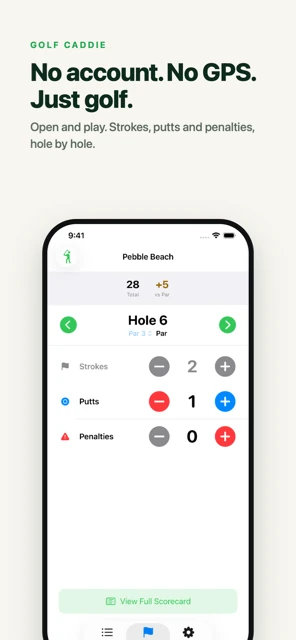
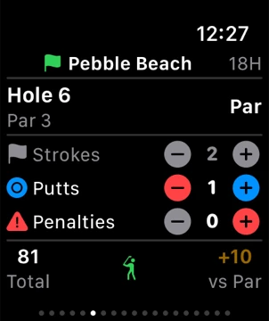
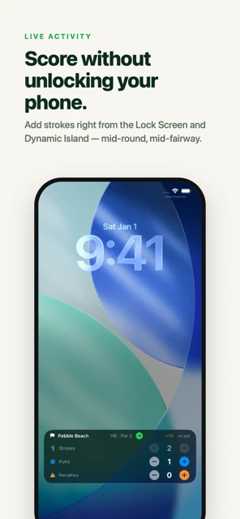
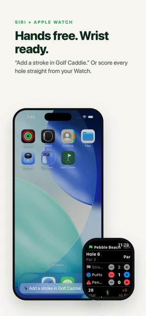
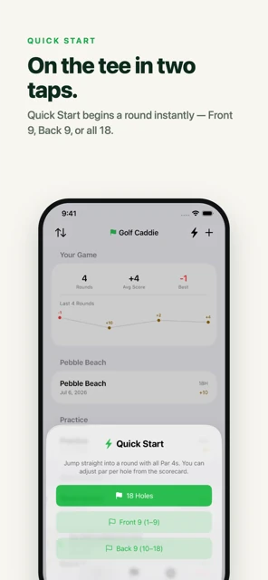
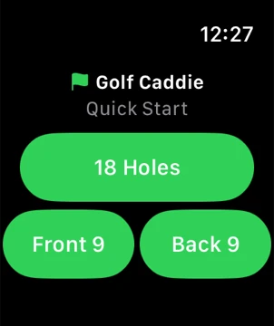
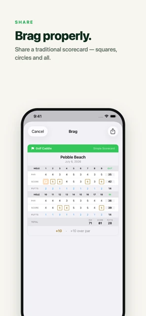
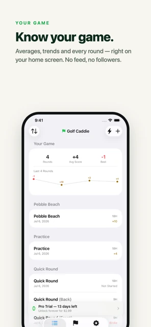
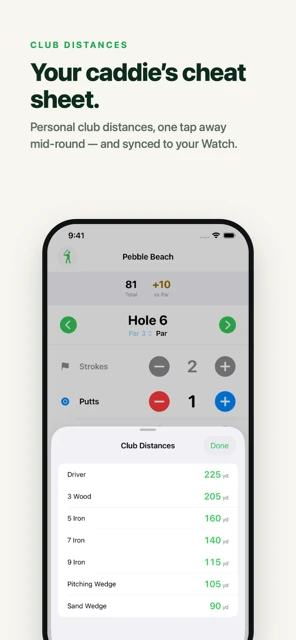
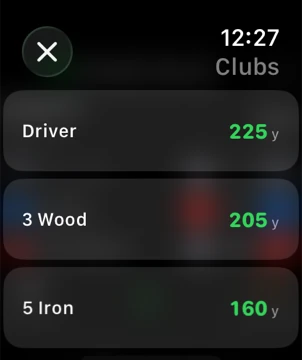
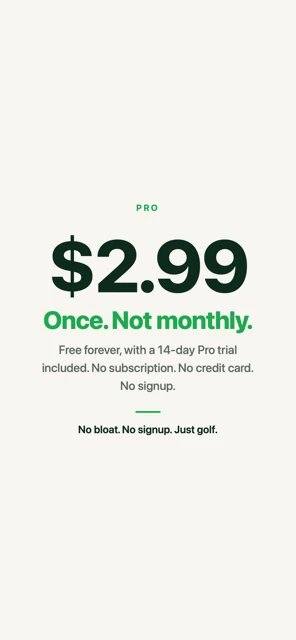
What's free and what Pro adds
Every new user gets a {{ gc.pricing.trial_days }}-day Pro trial with no credit card. {{ gc.pricing.trial_note }}
| Feature | Free | Pro (${{ gc.pricing.pro_price }} once) |
|---|---|---|
| {{ f.name }} | {% if f.tier == "free" %}Yes{% else %}{{ gc.pricing.trial_days }}-day trial{% endif %} | Yes |
{{ gc.pricing.price_note }}
Made by a golfer, not a subscription business
{%- comment -%} TODO(owner): add a photo of yourself here (about 96px, square) for trust. TODO(owner): battery. If you want to say how long Apple Watch lasts with Golf Caddie, run a real test first (watch model, watchOS version, start and end battery level, round length, Workout Tracking setting) and add the result here with the date. No battery claims on this page until then. TODO(owner): user quotes. Add real App Store reviews here with the reviewer's name and date, once you have permission to quote them. Never invent reviews or ratings. {%- endcomment %}I built {{ gc.short_name }} because I wanted to keep score without GPS maps, a social feed, AI features, a subscription, or a complicated scorecard. It's a scorecard and nothing else. If something is missing or broken, email me. Your feedback shapes every update.
{{ gc.developer }}, {{ gc.developer_bio }}
Frequently asked questions
{%- for item in page.faq %} {%- assign a = item.a | replace: "%price%", price | replace: "%trial%", trial | replace: "%ios%", gc.min_ios %}{{ item.q }}
{{ a | markdownify }} {%- endfor %}Looking for how-to steps? See {{ gc.short_name }} help.
Score your next round from your wrist
Free on the App Store. Try Pro free for {{ gc.pricing.trial_days }} days, then keep it for a one-time ${{ gc.pricing.pro_price }}.
Get {{ gc.short_name }} on the App Store